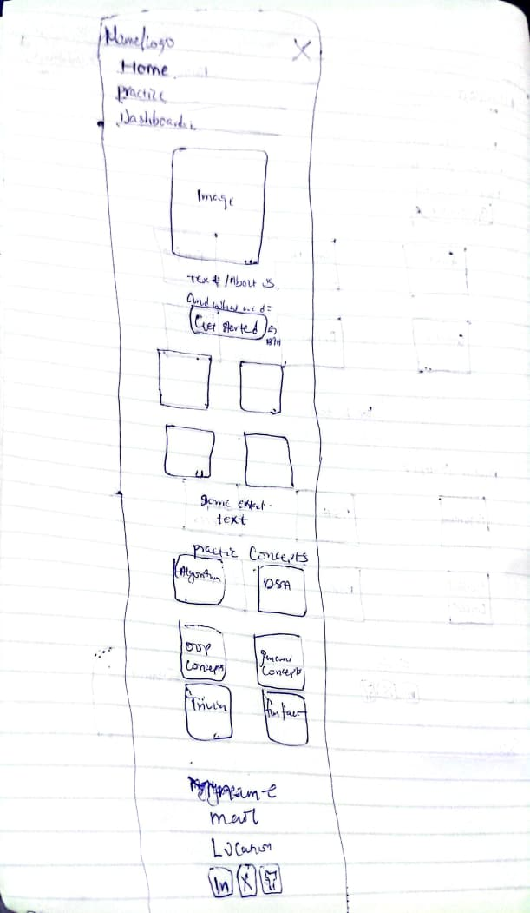
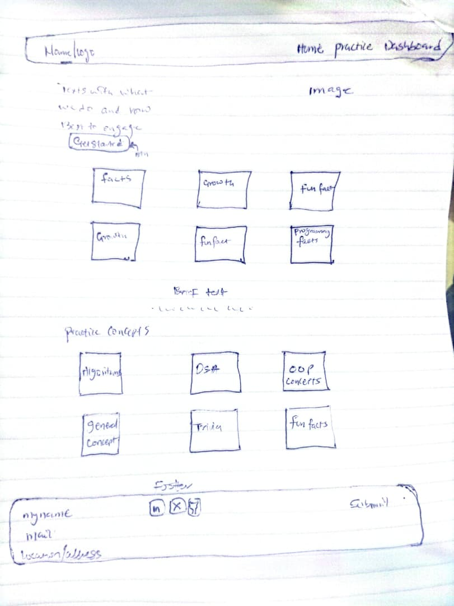

Site Name
DevDrill
The name pairs "dev" (the target audience — developers and CS students) with "drill," which signals repeated, focused practice rather than a one-off reference tool. It's short enough to work as a nav logo and doesn't tie the brand to any single institution, so it can be reused beyond this course.
Optional domain reference: devdrill.app
Site Purpose
DevDrill gives computer science students a focused way to self-test on core CS topics — data structures, algorithms, OOP concepts, and programming fundamentals — through short, timed multiple-choice quizzes. Questions are pulled from a public trivia API with a locally authored fallback bank, and each student's quiz history and missed questions are tracked locally so they can revisit weak areas instead of re-studying everything blindly.
Scenarios
- What CS topics can I quickly practice before a quiz or interview?
- Which questions did I get wrong last time, so I know what to review?
- Can I track whether I'm actually improving over multiple sessions?
Color Scheme
Four colors, used consistently across every page:
- #1B6E5B — Primary Dark Header/nav background, footer background
- #217A60 — Primary Links, buttons, active nav state, progress bar fill
- #7BD2A0 — Accent Badges, hover states, correct-answer highlight
- #F2F2F0 — Background Page background, card surfaces sit on this
Typography
Two typefaces, each with a clear job:
Fredoka — Headings
Used for all h1–h3 elements, nav links, and badges. Rounded and friendly, matches the gamified direction without undermining legibility.
System font stack (San Francisco / Segoe UI / Roboto) — Body text, paragraphs, form labels, quiz questions. Zero network cost and contrasts cleanly against the heading font.
Wireframe — Home Page
Hand-drawn sketches of the home page layout at small and large viewports. These are structure-only — no color, no final copy — and must be your own sketch per course rules (no AI-generated wireframes).


Sketch target: hamburger nav collapsing to horizontal links at desktop width, a hero with headline + CTA, a 3-step "how it works" block, and a footer with the required video-demo and attributions links. Stack sections vertically on mobile; the "how it works" steps can move to a 3-column row at desktop width.